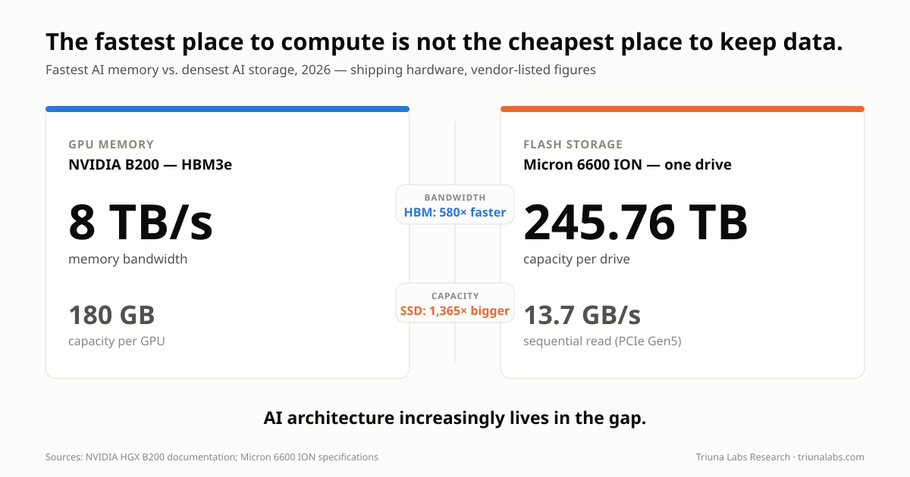
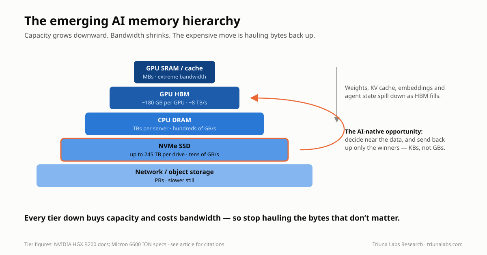
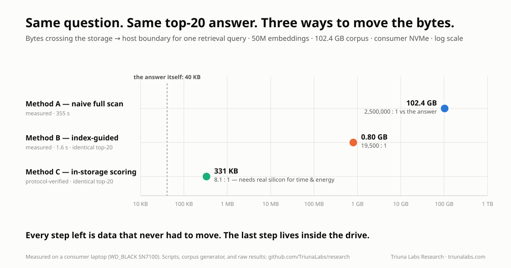
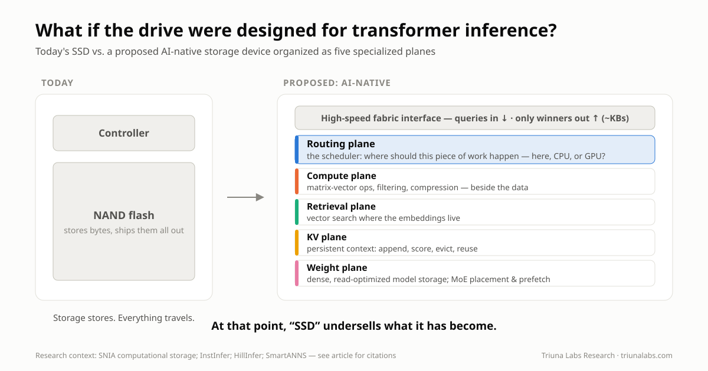

🧠 Route the Work, Not Just the Data: GPUs, CPUs, and the Rise of AI-Native Storage
When we think about Large Language Models, we tend to picture GPUs.
That makes sense. Modern generative AI would not exist at its current scale without them.
But GPUs also expose one of AI's increasingly important architectural problems:
The fastest place to compute is not the cheapest place to keep data.
An NVIDIA B200 GPU has 180 GB of HBM3e and can move data through that memory at up to roughly 8 TB/s.
At the other end of the hierarchy, Micron began shipping its 245.76 TB 6600 ION SSD in May 2026.
One drive can hold more than a thousand times as much data as a single B200's HBM.
But flash operates nowhere near HBM's bandwidth or latency.
That enormous gap between hundreds of gigabytes of extraordinarily fast memory and hundreds of terabytes of comparatively inexpensive persistent storage creates a fascinating architectural question:
What if storage stopped being merely the place where AI data waits for the GPU?
What if some AI workloads were processed near the storage itself — while an intelligent storage tier decided what actually needed to reach expensive GPU memory?
That may sound futuristic.
It actually follows a research path stretching back almost three decades.
And LLMs may provide one of the strongest reasons yet to pursue it.
Here is the thesis of this article, stated plainly:
An LLM request is not one monolithic computation — it is many kinds of work, and only some of it needs a GPU. As model state outgrows GPU memory, the winning architecture will route each operation to the cheapest tier that can perform it — GPU, CPU, or increasingly intelligent storage — and the cost that decides the route is data movement. The next major AI optimization is not "compute faster." It is "move less."
Everything that follows is the evidence: what already ships, what research demonstrates, what I measured on my own hardware, and what remains genuinely speculative.

⚙️ First: What Is an LLM Actually Doing?
An LLM is not searching a giant database for a sentence matching your prompt.
At a simplified level, it repeatedly performs enormous amounts of numerical computation.
Your text is divided into tokens.
Those tokens are converted into numerical vectors and passed through many layers of a neural-network architecture called the Transformer.
The Transformer was introduced in the landmark 2017 paper Attention Is All You Need.
Two operations are especially important.
Attention
Attention helps the model determine which previous tokens matter when interpreting the current token.
A simplified version creates three representations:
- Query: What am I looking for?
- Key: What information do I represent?
- Value: What information should be passed forward?
Queries are compared against keys.
Attention scores are calculated.
Those scores determine how strongly different values influence the next representation.
Feed-Forward Networks
Each Transformer layer also contains large learned matrices that transform the token representations.
Across billions of parameters, this creates an enormous amount of multiplication and accumulation.
Eventually, the model produces a probability distribution over possible next tokens.
It selects a token according to the decoding strategy, appends it to the sequence, and performs the process again.
And again.
And again.
That repeated numerical workload helps explain why GPUs became so important.
🧮 Why GPUs Are Better Than CPUs for LLMs
CPUs are extraordinary general-purpose processors.
They are designed for workloads such as:
- Operating systems
- Application logic
- Branching
- Databases
- Networking
- Scheduling
- Serial dependencies
- Irregular computation
- Many different instruction types
A CPU's strength is flexibility.
An LLM workload is different.
Huge portions of it repeatedly ask something closer to:
Can you multiply these enormous arrays of numbers as quickly and in as much parallelism as possible?
GPUs were built for parallelism.
Modern AI GPUs contain thousands of execution units plus specialized Tensor Cores designed for matrix operations using formats such as FP16, BF16, FP8 and increasingly lower-precision representations.
They also sit beside extraordinarily fast High Bandwidth Memory.
NVIDIA lists a B200 at up to roughly 8 TB/s of HBM bandwidth per GPU.
A high-performance PCIe Gen5 SSD such as Micron's 9550 reaches roughly 14 GB/s of sequential read bandwidth.
Those are completely different performance classes.
There is no plausible architecture in which NAND flash simply becomes a drop-in substitute for GPU HBM.
But that is not the interesting question.
The interesting question is:
How much data could we prevent from needing to cross that boundary at all?
The goal is not to make SSDs behave like GPUs. The goal is to stop sending the GPU work and data it does not need.
🧠 LLM Inference Has a Memory Problem
Inference generally contains two broad phases.
Prefill
When you initially submit a prompt, many prompt tokens can be processed in parallel.
This stage can be highly compute-intensive and maps well to GPUs.
Decode
Then generation begins.
The model produces one token.
Then another.
Then another.
Each new token depends on information derived from what came before.
This autoregressive process means inference repeatedly accesses enormous model weights and an expanding amount of context state.
Depending on model architecture, batch size, hardware and workload, the bottleneck can therefore shift away from raw arithmetic throughput toward memory bandwidth and data movement.
This is one reason FlashAttention became such an important contribution.
FlashAttention does not make multiplication fundamentally faster.
It reorganizes attention specifically to reduce expensive movement between GPU HBM and faster on-chip SRAM.
Its authors explicitly frame attention optimization as an I/O-aware problem.
That is an important lesson:
Even inside a GPU, moving data can become as important as computing it.
Now expand that problem outside the GPU.
🗃️ The KV Cache: LLM Working Memory
During attention, Transformers generate key and value tensors representing prior tokens.
Without retaining those tensors, the system would repeatedly recompute previous attention state every time another token was generated.
Instead, inference engines store them in a Key-Value cache, usually shortened to KV cache.
That dramatically reduces redundant computation.
But the cache grows with:
- Context length
- Number of model layers
- Model architecture
- Number of simultaneous requests
- Persistent agent histories
- Long-running reasoning
- Repeated document interactions
The scale becomes surprisingly large.
NVIDIA has illustrated an example in which a 128K-token context for Llama 3 70B consumes roughly 40 GB of KV-cache memory for a single user at batch size 1.
Forty gigabytes is not the model.
It is just the cached attention state associated with one long-context request in that example.
Multiply long contexts across hundreds or thousands of concurrent requests, persistent agents, document workflows or reasoning processes and the problem becomes obvious:
HBM is incredibly fast, but it is scarce.
🪜 The Emerging AI Memory Hierarchy
Increasingly, AI infrastructure has to treat memory as a hierarchy:
GPU SRAM / cache ↓ GPU HBM ↓ CPU DRAM ↓ Local NVMe SSD ↓ Remote / network storage
Each step generally offers more capacity.
Each step generally sacrifices latency and bandwidth.

Modern inference software is beginning to explicitly manage that hierarchy.
NVIDIA Dynamo, for example, supports KV-cache offloading beyond GPU memory. Its architecture can spill KV-cache blocks into CPU memory or local storage, allowing larger contexts and reuse of previously computed prefixes.
NVIDIA's FlexKV work extends this concept across tiers including GPU, CPU and SSD-backed storage.
So one part of this article is no longer speculative:
SSDs are already becoming part of the LLM inference memory hierarchy.
The more interesting question is what happens next.
🕰️ Computational Storage Did Not Begin With AI
The idea of computing near stored data is surprisingly old.
1998: Active Disks
Researchers were publishing Active Disk architectures in the late 1990s.
Instead of treating a disk as a completely passive block device, researchers proposed integrating processing power and memory into storage devices and allowing application-specific computation to occur there.
The 1998 paper Active Disks: Programming Model, Algorithms and Evaluation examined drives containing significant processing capability.
Another 1998 paper, Active Storage for Large-Scale Data Mining and Multimedia, explored using processors embedded in storage devices for data-intensive workloads such as data mining and multimedia databases.
The motivation already sounds familiar:
Why continuously move enormous datasets to a central processor when some work can happen where the data already resides?
That idea did not disappear.
Storage technology changed around it.
💾 Flash Made the Idea More Interesting
SSDs changed the nature of storage.
An SSD is not simply a pile of passive memory cells.
It already contains sophisticated:
- Controllers
- Firmware
- NAND channels
- Error correction
- Wear management
- Address translation
- Internal memory
- Parallel data paths
Once programmable processors, FPGAs or specialized accelerators are added, storage can perform application-specific computation.
Over time, overlapping research areas developed around concepts such as:
- Near-data processing
- Near-storage processing
- In-storage computing
- Programmable storage
- Computational storage
A useful overview is Past, Present and Future of Computational Storage: A Survey.
The architectural principle is simple:
If moving a large dataset costs more than performing a useful operation beside it, move the operation toward the data.
🧩 SmartSSDs Became Physical Products
The idea eventually moved beyond research prototypes.
Samsung's SmartSSD Computational Storage Drive combined an NVMe SSD with a Xilinx FPGA in the same module.
AMD/Xilinx documentation described the device as integrating Samsung NVMe storage and programmable FPGA compute to accelerate storage-intensive workloads such as:
- Compression
- Decompression
- Encryption
- Filtering
- Search
- Data transformation
Samsung followed with a second-generation SmartSSD in 2022 using adaptive compute technology and onboard processing intended to reduce data movement between storage, CPU, GPU and RAM.
This did not mean the SSD had become another GPU.
Something subtler happened:
The storage device gained enough local intelligence that some bytes no longer needed to leave it.
That principle becomes extremely interesting for AI.
📐 Computational Storage Became an Architecture
The Storage Networking Industry Association — SNIA — has developed computational-storage architecture, API and interoperability work around this concept.
Computational storage broadly describes systems that couple computation with storage in order to:
- Offload host processing
- Reduce data movement
- Process data locally
- Return smaller or more useful results upstream
That matters because computational storage is no longer simply an isolated laboratory experiment.
There is now an architectural vocabulary around storage devices that compute.
Then LLMs arrived.
🤖 LLM Research Starts Moving Computation Toward SSDs
Several recent research projects are particularly relevant.
And notably, this research now spans a wide range of systems — from datacenter-scale serving architectures to memory-constrained AI PCs and edge systems.
That breadth matters.
The storage problem is not limited to giant hyperscale clusters.
The same mismatch between model state, context capacity and accelerator memory appears wherever increasingly capable models encounter finite GPU or unified-memory resources.
SmartANNS: Search Where the Vectors Live
Large RAG and vector-search systems may contain billions of embeddings.
In 2024, researchers presented SmartANNS, a billion-scale approximate-nearest-neighbor search architecture using multiple SmartSSDs.
The host CPU performs high-level coordination while SmartSSDs execute portions of the search over their local index shards.
Research:
This is particularly relevant to RAG.
Why move a gigantic embedding dataset toward a CPU or GPU just to discard nearly all of it after retrieval?
Search closer to the vectors.
Return the useful results.
InstInfer: Put Attention Near the KV Cache
In 2024, InstInfer explored an even more direct connection between LLM inference and computational storage.
Its researchers proposed a flash-aware in-storage attention engine and KV-cache management architecture.
Rather than repeatedly moving huge KV caches through constrained PCIe links, portions of decode-phase attention could occur closer to the stored cache.
Research:
InstInfer: In-Storage Attention Offloading for Cost-Effective Long-Context LLM Inference
That moves the idea beyond:
SSD as larger memory
toward:
SSD as a participant in inference.
Near-Storage Attention
Other work has continued exploring the same boundary.
Research in the INF² / HILOS direction examines near-storage processing where memory-intensive attention and KV-cache operations can be pushed toward computational-storage accelerators.
Research:
Near-Storage Processing for Generative LLM Inference
Again, the objective is not to reproduce an entire GPU inside an SSD.
It is to move the operations whose data dependencies make them expensive to transport.
SolidAttention: SSDs for Long Context
At USENIX FAST 2026, researchers presented SolidAttention, an LLM inference engine combining dynamic sparse attention with SSD-aware storage management.
Importantly, the work targets memory-constrained AI PCs, demonstrating that SSD-aware inference is not solely a datacenter problem.
The system groups KV pairs into larger blocks, predicts future accesses and coordinates SSD I/O with GPU computation.
For long-context workloads, the researchers reported dramatic reductions in KV-cache memory requirements while maintaining useful model accuracy.
Research:
SolidAttention — USENIX FAST 2026
The important conceptual shift is this:
An SSD does not necessarily need to treat all context as equally important.
Software can predict which portions matter.
That is the beginning of intelligent routing.
HillInfer: Let the SmartSSD Decide What Matters
HillInfer, published in 2026, pushes the concept even closer to the architecture proposed here.
It jointly manages KV-cache pools across CPU memory and SmartSSD storage.
Crucially, it performs importance evaluation inside the SmartSSD FPGA, helping reduce unnecessary KV-cache movement.
Research:
HillInfer: Hierarchical KV Eviction Using SmartSSD
Think about what changed.
The SSD is not merely storing KV blocks.
It is helping decide:
Which KV blocks are worth moving?
That is a much more interesting role.
Tutti: Fixing the SSD-to-GPU Path
Even if SSDs have enormous capacity, retrieving thousands of fragmented KV-cache blocks creates another problem.
Large numbers of small I/O operations can overwhelm software and make the CPU itself part of the bottleneck.
The 2026 Tutti research project attacks that problem by creating a more GPU-centric path between NVMe storage and GPU memory.
Its design integrates with vLLM and reorganizes KV-cache storage around larger object transfers and GPU-driven I/O scheduling.
Research:
Tutti: Making SSD-Backed KV Cache Practical for Long-Context LLM Serving
Notice how the research question has evolved.
It is no longer:
Can an SSD store AI data?
Of course it can.
It is becoming:
How should the entire storage-memory-GPU hierarchy be redesigned around AI inference?
Computational storage started by moving simple operations toward stored data. LLM research is now asking whether retrieval, attention and context management should move there too.
🧭 The Next Step: Stop Assuming Everything Belongs on the GPU
This is where I think the most interesting research direction appears.
An LLM inference request is not one monolithic computation.
It contains different kinds of work.
Some are perfect for GPUs.
Others involve:
- Searching
- Filtering
- Ranking
- Cache lookup
- Compression
- Decompression
- Deduplication
- Sparse selection
- Data movement
- Metadata management
- Prefetching
What if an AI-aware storage controller could classify those operations and determine which tier should execute them?
Instead of assuming:
everything eventually goes to the GPU
the system could ask:
Does this operation actually need the GPU?
🚦 A Theoretical AI Workload Router
Imagine a request enters an AI system.
The storage layer does not simply expose anonymous NVMe blocks.
It understands some semantics of models, KV caches, embeddings and context.
A routing layer could make decisions such as:
Storage-Local
Search these four billion embeddings and return the best candidates.
Storage-Local
Determine whether this document prefix already has reusable KV state.
Storage-Local
Scan this 200 GB KV-cache pool and identify the blocks most likely to matter.
Storage-Local
Compress, decompress, quantize or prepare selected model data before transfer.
Storage-Local
Identify which Mixture-of-Experts weights are likely to be needed next and prefetch them.
CPU / System Memory
Perform orchestration, branching, scheduling, metadata handling and irregular processing.
GPU HBM
Keep the latency-critical active working set.
GPU Compute
Execute dense matrix multiplication, tensor operations and the hot Transformer path.
This changes the architectural objective completely.
The goal is no longer:
Make NAND fast enough to imitate HBM.
It becomes:
Prevent the GPU and HBM from ever receiving data that did not need to be there.
That potentially reduces:
- Bandwidth pressure
- Scarce HBM consumption
- CPU-mediated I/O
- Unnecessary GPU activity
- Energy spent moving irrelevant data
The routing objective becomes:
Move less data.
Occupy less scarce HBM.
Spend less energy.
📊 Which LLM Workloads Could Potentially Move?
Some possibilities already have research behind them.
Others remain speculative.
| LLM workload | Potential near-storage role | Likely GPU requirement |
|---|---|---|
| Dense Transformer GEMM | Poor fit for flash-side processing | GPU remains ideal |
| Full dense attention | Limited | Mostly GPU |
| Sparse-attention selection | Candidate | GPU computes selected attention |
| KV-cache persistence | Excellent fit | GPU only when data becomes active |
| KV prefix lookup | Excellent fit | Often no |
| KV importance scoring | Already being researched | Not necessarily |
| KV compression | Candidate | Not necessarily |
| KV eviction | Strong candidate | No |
| KV deduplication | Strong candidate | No |
| Vector similarity search | Already demonstrated in SmartSSD research | Optional GPU reranking |
| RAG filtering | Strong candidate | Not necessarily |
| Weight decompression | Candidate | GPU executes resulting weights |
| Quantization / dequantization | Candidate | Depends on architecture |
| MoE expert lookup | Strong candidate | GPU executes selected experts |
| MoE expert prefetch | Strong candidate | No |
| Model-weight backing store | Strong fit | GPU consumes hot portions |
| Prompt / document preprocessing | Candidate | Often no |
| Context persistence between sessions | Excellent fit | No |
The important point is not that all of these should move to an SSD.
They should not.
The research opportunity is determining:
Which operations save more bandwidth, latency, energy or GPU resources by moving toward storage than they cost to execute there?
⚡ Why This Could Reduce GPU Activity and Energy Use
Consider a simple retrieval example.
Imagine an enterprise AI system has a 20 TB embedding corpus.
The objective of a query might ultimately be to retrieve 20 useful passages.
A naive conceptual architecture looks like:
Storage → move candidate data → CPU/GPU search → discard almost everything → 20 useful passages
A computational-storage architecture can instead look like:
Storage + local vector computation → search/filter/rank locally → 20 useful passages → GPU
The SSD did not become faster than the GPU.
It avoided moving irrelevant data.
And there is a physical and economic argument underneath that distinction:
Moving data through a memory hierarchy can consume substantially more energy than performing relatively simple arithmetic on that data.
This has been recognized in computer architecture for years.
Mark Horowitz's influential work on computing energy illustrated how memory access and data movement can substantially exceed the energy required for basic arithmetic operations.
Later neural-network accelerator research similarly highlighted how fetching model data from off-chip memory can dominate the energy cost of the arithmetic that ultimately consumes it.
Useful references include:
Computing's Energy Problem (and what we can do about it) — Mark Horowitz, ISSCC 2014
EIE: Efficient Inference Engine on Compressed Deep Neural Network
That means locality can potentially create three wins at once:
- Move less data.
- Consume less scarce HBM capacity and bandwidth.
- Spend less energy moving and processing unnecessary data at a more expensive tier.
This does not mean computation inside an SSD is free.
It is not.
Flash access, controllers, accelerators and interconnects all consume energy.
The correct comparison is:
Does performing this operation near the data consume less energy and time than transporting the data to another tier, processing it there, and potentially discarding most of it?
For some workloads, the answer will be no.
For others — filtering, retrieval, cache scoring, compression, sparse selection and similar data-reduction operations — that tradeoff could become very attractive.
The same principle could eventually apply to KV cache.
Instead of:
Retrieve huge historical KV cache → GPU determines what matters
the architecture becomes:
Storage evaluates cache → retrieves selected blocks → GPU receives hot working set
The GPU still performs the operations it is uniquely good at.
But it performs less housekeeping.
It sees less irrelevant data.
It dedicates less HBM to cold state.
It potentially spends fewer GPU cycles on work that can happen elsewhere.
And the system avoids paying the bandwidth and energy cost of moving data simply to discover that it was not needed.
🧪 A Measurement Anyone Can Reproduce
Claims about data movement deserve numbers, so I measured this on ordinary consumer hardware: a laptop with 40 GB of RAM and a WD_BLACK SN7100 NVMe SSD (~2.1 GB/s measured sequential read on this machine).
The setup: 50 million synthetic document embeddings — 1024 dimensions, fp16, generated with realistic cluster structure and stored in an IVF-style cluster-grouped layout. That is 102.4 GB on disk, deliberately 2.5× larger than RAM so the operating system's page cache cannot quietly fake the results. Every scan is structurally forced to hit the drive.
Then one top-20 similarity query, answered two ways:
Method A — Naive full scan. Stream the entire corpus from SSD to CPU and score everything. This is "move the bytes to the compute."
Method B — Index-guided. Score the query against 1,024 cluster centroids (a few kilobytes of data), then read only the 8 most promising clusters — about 0.8% of the corpus. This is a software stand-in for "decide near the data, and move only what matters."
The results:
| Naive full scan | Index-guided | |
|---|---|---|
| Data moved | 102.4 GB | 0.80 GB |
| Wall time | 355 s | 1.6 s |
| Top-20 returned | baseline | identical (recall = 1.0) |
| Bytes moved per useful byte | ~2,500,000 : 1 | ~19,500 : 1 |
Same question. Same answer. 128× less data movement. 228× faster.

Two observations from this measurement matter for the argument of this article.
First, the naive scan's effective throughput was only 0.29 GB/s — well below the drive's 2.1 GB/s raw read speed — because the host CPU had to both receive and score every byte. Moving data to compute makes the host pay twice.
Second, and more importantly: even the indexed query still moved roughly 19,500 bytes for every byte of useful answer. The index knows which clusters to read, but the host must still import entire clusters to find the 20 vectors it wants.
That residual gap is precisely the territory an AI-native retrieval plane would claim. A drive that could score candidates internally and return only the winners would attack the remaining four orders of magnitude.
A back-of-envelope energy note makes the same point from the physics side. Using commonly cited figures of a few pJ per bit for PCIe-class transfer and Horowitz-class estimates for DRAM staging, the naive query's 102 GB of movement costs on the order of tens of joules — while the fp16 arithmetic that actually decided the answer costs orders of magnitude less. The energy bill of that query was overwhelmingly a transportation bill.
This measurement is deliberately modest: one query shape, synthetic data, a software index, a consumer drive. It does not demonstrate computational storage — no FPGA was involved. What it measures is the size of the prize: the ratio between the bytes a query touches and the bytes it needs. That ratio is what every system in the research above — from SmartANNS to HillInfer — is built to shrink.
🔭 The Benchmark I Cannot Run Yet
The measurement above stops exactly where my hardware stops.
I do not own a computational storage device. So the natural third method is, for now, a proposal — stated precisely enough to be run, and to be proven wrong.
Method C — in-storage candidate scoring (requires a SmartSSD-class device: NVMe storage plus an FPGA or equivalent accelerator in the same module):
- The host sends the query vector and the 8-cluster probe list to the device — a few kilobytes down.
- The device scans the probed clusters internally, computes the fp16 dot products next to the NAND, and returns only the top-20 candidates per cluster — roughly 300 KB up.
- The host merges 160 candidates into the final top-20.
What to measure, against Methods A and B on the same corpus: bytes crossing the bus in each direction, wall time, host CPU utilization, and — with a wall-power meter — energy per query.
One prediction is already verifiable at the protocol level. I implemented the Method C wire protocol with a simulated device — a separate process that exclusively owns the corpus and speaks only the protocol, so the bus bytes are counted across a real boundary. Result: 2,092 bytes down, 329,600 bytes up — a movement-waste ratio of 8.1 : 1, with the returned top-20 identical to the full-scan ground truth. The "under 10 : 1" claim is protocol arithmetic, not speculation.
The predictions that still need hardware:
- Wall time stays at or below Method B's, because computational-storage designs can expose more aggregate internal NAND bandwidth than the external link, and the scoring math is trivial next to the transport it eliminates.
- Energy per query drops even though the device's compute is far weaker than a host CPU or GPU — because the energy bill was always the transport, not the arithmetic.
A CPU simulating an FPGA proves nothing about either — those two columns stay honestly empty until someone runs this on real silicon.
And what would falsify the thesis: if in-device scoring turns out slower or more energy-hungry than shipping the clusters out, then vector scoring belongs on the host after all — and the retrieval-plane claim weakens to cache persistence and data management only. That result would be worth publishing too.
Everything except the FPGA kernel is public in the repository: the corpus generator, the baseline harnesses, the Method C wire protocol, a NumPy reference implementation of the device-side computation, and the simulated backend that verifies the contract. A hardware owner implements one class and gets a complete experiment. The baseline is waiting.
🧩 What Would an AI-Native SSD Actually Look Like?
If we designed storage specifically around Transformer inference instead of adapting a conventional SSD, I would divide it into several logical planes.

1. Weight Plane
LLM weights have unusual storage characteristics.
Once a model is deployed, huge weight files may be read repeatedly while changing relatively infrequently.
An AI-native storage tier could understand model structure and optimize for:
- Quantized weights
- Tensor-aligned storage
- Highly parallel weight reads
- Decompression
- Prefetching
- Hot and cold weight classification
- Mixture-of-Experts placement
- Expert prediction
- Model-version sharing
The GPU still performs the primary matrix computation.
But the storage system becomes intelligent about how those weights reach it.
2. KV Plane
KV cache behaves very differently from model weights.
It is:
- Created continuously
- Appended rapidly
- Read repeatedly
- Reused between requests
- Evicted
- Potentially compressed
- Potentially persistent
An AI-specific KV tier could expose operations such as:
- Append
- Retrieve
- Prefix lookup
- Deduplicate
- Compress
- Score
- Evict
- Prefetch
- Persist
- Share
Current hierarchical KV-cache work already demonstrates that context state is becoming a managed resource spanning multiple memory tiers.
An AI-native SSD would push more of that intelligence into or immediately beside the storage device.
3. Retrieval Plane
Vector databases are an especially obvious opportunity.
If billions of embeddings reside on flash, a computational-storage device could potentially perform:
- Approximate nearest-neighbor search
- Metadata filtering
- Candidate pruning
- Similarity calculations
- Coarse ranking
before returning a much smaller candidate set.
SmartANNS demonstrates that parts of this architecture are already viable on SmartSSD hardware.
For RAG systems, this may be one of the clearest examples of:
Compute beside the data and move only the answer.
4. Compute Plane
The device would not need another giant GPU.
Instead, it could have specialized accelerators for operations where locality matters more than maximum floating-point throughput:
- Vector similarity
- Prefix matching
- Cache scoring
- Sparse-attention selection
- Compression
- Quantization
- Dequantization
- KV filtering
- Data transformation
- Selected matrix-vector operations
Research systems such as InstInfer, near-storage attention architectures and HillInfer are already exploring pieces of this design space.
5. Routing Plane
This may ultimately be the most important part.
An AI-native storage device could include a scheduler that understands questions such as:
- Where is the data?
- How expensive is moving it?
- Is this operation dense or sparse?
- Does it require GPU-class precision or throughput?
- Is the data hot or cold?
- Is this context likely to be reused?
- Can 100 GB be reduced to 2 GB before transfer?
- How much HBM would it consume?
- What is the energy cost of each possible route?
- Does the GPU need this data at all?
Then it routes work accordingly.
That would turn the SSD from:
NAND + controller
into something closer to:
NAND + cache engine + retrieval accelerator + lightweight AI compute + workload router + high-speed fabric interface
At that point, calling it an "SSD" may undersell what it has become.
💾 Why 245 TB Matters
This is why Micron's 245.76 TB 6600 ION is interesting in this discussion.
It is not evidence that SSDs can replace GPU memory.
They cannot.
The drive demonstrates something different:
Flash capacity is now operating on a completely different scale from accelerator memory.
Micron began shipping the 6600 ION 245.76 TB SSD in May 2026.
A handful of drives can provide around a petabyte of local flash capacity.
That creates room for enormous amounts of AI state:
- Model libraries
- Quantized model variants
- Mixture-of-Experts weights
- Persistent KV caches
- Enterprise document collections
- Embedding indexes
- Multimodal embeddings
- Agent histories
- User-specific context
- Reusable prompt prefixes
- Long-running reasoning state
The problem becomes less:
Can we store it?
and increasingly:
Can we make that capacity participate intelligently without drowning the GPU in I/O?
⚠️ The Hard Limit: Capacity Is Not Bandwidth
This distinction cannot be overstated.
A high-performance PCIe Gen5 SSD can deliver roughly 14 GB/s of sequential reads.
An NVIDIA B200 can access its local HBM at up to roughly 8,000 GB/s.
These devices exist for different purposes.
If a dense model had to retrieve its entire parameter set from NAND for every generated token, performance would collapse.
An AI-native SSD therefore does not win by pretending flash is slow HBM.
It wins when locality allows it to reduce the amount of information moving across the boundary.
That is the architectural principle behind computational storage:
Do work where the data already exists when doing so costs less than moving the data somewhere else.
📊 The AI Memory Hierarchy
| Tier | Capacity class | Bandwidth class | Likely AI role |
|---|---|---|---|
| GPU SRAM / cache | MB | Extremely high | Immediate computation |
| GPU HBM | Hundreds of GB per GPU | Multi-TB/s | Hot tensors, active KV, model execution |
| CPU / system memory | TB-class per server | Hundreds of GB/s | Larger working sets, orchestration, offload |
| NVMe SSD | TB to 245 TB per drive | Tens of GB/s | Persistent state, weights, KV, vectors |
| AI-native storage | TB to PB across devices | Flash-class physical bandwidth | Local search, filtering, KV management, near-data compute |
The final tier does not magically gain HBM bandwidth.
Its advantage is different:
It reduces how much data needs the faster tiers at all.
🔮 The Natural Progression
Seen historically, the architecture looks less like a wild prediction and more like a progression.
Stage 1: Passive Storage
SSD stores the model.
Universal today.
Stage 2: Computational Storage
SSD executes filtering, compression, search and specialized computation locally.
This exists.
Stage 3: AI-Aware Storage
Storage software and research systems begin understanding AI structures such as KV blocks, embeddings, model weights and expert placement.
Pieces of this are appearing now.
Stage 4: AI-Native Storage
Dedicated KV, retrieval, sparse-compute and routing engines are designed directly into the storage architecture.
This remains primarily a research and design direction.
Stage 5: Processing Near or Inside Memory
Computation moves even closer to the memory arrays themselves.
At that point the architecture begins overlapping with broader processing-in-memory and near-memory computing research.
The boundaries between storage, memory and compute become increasingly difficult to define.
🚀 The GPU Is Not Going Away
And it should not.
GPUs remain extraordinarily good at the hot numerical core of Transformer inference.
Dense matrix multiplication belongs there.
HBM belongs there.
Latency-critical active state belongs there.
But GPUs are also expensive resources with limited HBM.
Using them as the destination for every piece of data simply because they are the fastest processors may become increasingly inefficient.
The alternative is a more intelligent hierarchy.
CPU: orchestrate.
GPU: perform dense parallel computation.
HBM: hold the immediate working set.
DRAM: extend active memory.
AI-native storage: hold enormous persistent state and process selected operations near that state.
🧠 The Bigger Architectural Idea
For decades we thought about computers roughly like this:
Storage stores.
Memory feeds.
CPU computes.
GPUs already disrupted that model by combining enormous parallel-compute capability with extremely fast local memory.
Computational storage attacks the same architecture from the opposite direction:
Storage begins acquiring compute.
LLMs may cause those two directions to converge.
We are already seeing:
- GPU-aware storage
- SSD-backed KV cache
- KV-aware request routing
- Computational SmartSSDs
- Vector search near storage
- Attention near storage
- GPU-direct storage paths
- Hierarchical context memory
- Intelligent KV eviction
There is also an energy dimension connecting nearly all of these developments.
As arithmetic becomes increasingly specialized and efficient, the relative cost of moving data becomes increasingly important.
That is one reason near-memory, in-memory and near-storage computing continue to attract research interest.
Locality can improve performance while also avoiding some of the energy spent transporting data through multiple layers of a system.
An AI workload router could therefore optimize for more than latency.
It could potentially consider:
- Where is the data?
- How much of it must move?
- How expensive is that movement?
- How much HBM would it occupy?
- What compute tier can execute the operation efficiently?
- How much energy would each route consume?
Eventually, routing an AI workload might look less like conventional I/O scheduling and more like a cost function across compute, capacity, bandwidth, latency and energy.
The next step may be systems that decide dynamically:
Where should this particular piece of AI work happen?
Not everything belongs on the CPU.
Not everything belongs on the GPU.
And increasingly, not everything needs to leave storage.
💡 The Research Question
So I do not think the most interesting question is:
Can an SSD run an LLM?
That frames the problem incorrectly.
The better question is:
How much of an LLM system can be moved toward hundreds of terabytes of storage so that the GPU performs only the work that genuinely requires GPU-class compute and bandwidth?
That creates a very different research agenda.
Build storage that understands:
- Models
- Context
- KV caches
- Embeddings
- Sparsity
- Retrieval
- Reuse
- Locality
- Energy cost
- Routing
Then give it enough specialized computation to act on that knowledge.
The optimization target is no longer simply maximum GPU utilization.
It becomes:
Put each operation where it can be performed most efficiently while moving the minimum amount of data required.
That could mean reducing GPU activity for selected operations.
Reducing HBM pressure.
Reducing PCIe and fabric traffic.
Reusing previously computed context instead of recreating it.
Reducing the energy cost of inference by eliminating unnecessary data movement.
The SSD probably will not replace the GPU.
But it may become much more than the vault feeding it.
The line separating storage, memory and compute is already starting to disappear.
And the enormous capacity gap between HBM and flash suggests there is still a very large architectural space left to explore.
Perhaps the next major AI hardware optimization is not simply:
compute faster.
It is:
move less.
📚 Research Trail
Transformer and LLM Memory Architecture
Attention Is All You Need — Vaswani et al.
FlashAttention: Fast and Memory-Efficient Exact Attention with IO-Awareness
NVIDIA — Large-Scale LLM Inference and KV Cache Offload
NVIDIA Dynamo — KV Cache Offloading
Computational Storage History
Active Disks: Programming Model, Algorithms and Evaluation — 1998
Active Storage for Large-Scale Data Mining and Multimedia — VLDB 1998
Past, Present and Future of Computational Storage: A Survey
Samsung Second-Generation SmartSSD Computational Storage
LLM + SSD / Near-Storage Research
SmartANNS — SmartSSD Approximate Nearest Neighbor Search, USENIX ATC 2024
InstInfer: In-Storage Attention Offloading
Near-Storage Processing for Generative LLM Inference
SolidAttention — SSD-Based Long-Context LLM Serving, USENIX FAST 2026
HillInfer: Hierarchical KV Eviction Using SmartSSD
Tutti: Making SSD-Backed KV Cache Practical
Energy and Data Movement
Computing's Energy Problem (and what we can do about it) — Mark Horowitz, ISSCC 2014
EIE: Efficient Inference Engine on Compressed Deep Neural Network
Practical Near-Data Processing for In-Memory Analytics Frameworks
Current Hardware
Micron 6600 ION — Up to 245.76 TB
NVIDIA HGX B200 Memory Specifications